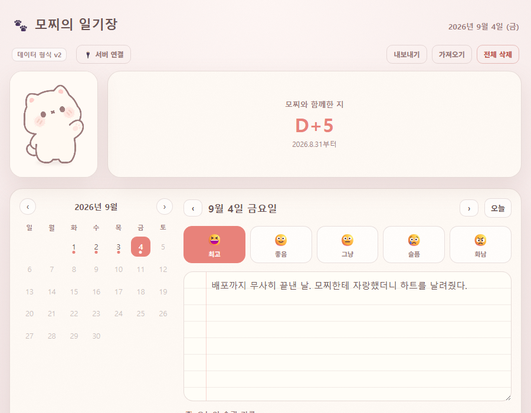
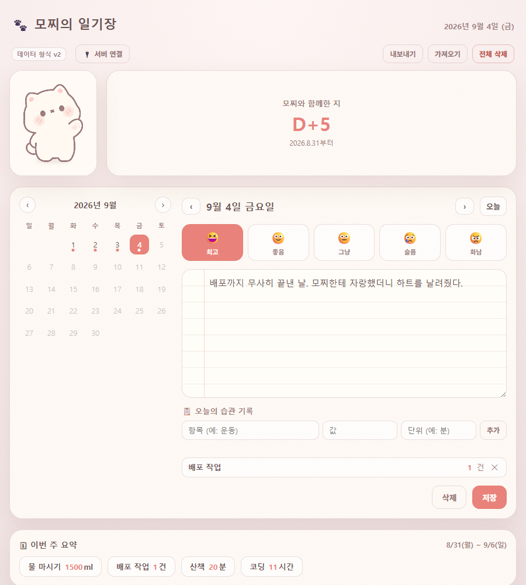
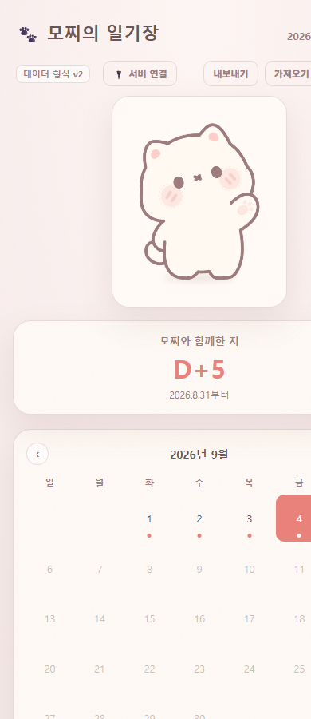

단위·시간대를 지키는 CRUD, 오류에 안전한 내보내기/가져오기,
형식이 자동으로 바뀌는 스키마 이전, 월~일 주간 집계까지 갖춘 다이어리를
실제 Node/Express+SQLite 백엔드에 연결해 6일간 직접 써본 기록
과제 제출 보고서
기존에 취미로 쓰려던 개인 다이어리를 과제 기준(카드 1~5)에 맞춰 다시 설계했습니다. 화면은 이미 있던 모찌 캐릭터 위젯을 얹어 "쓰는 게 재미있는 일기장"을 목표로 했고, 저장은 처음엔 브라우저 localStorage뿐이었다가 Node/Express + SQLite로 만든 실제 백엔드를 올려 서버에도 저장할 수 있게 했습니다.
| 카드 | 요구사항 | 구현 |
|---|---|---|
| 1 | CRUD, 단위·시간대 처리 | 달력 기반 날짜별 CRUD. 습관 기록은 항목·값·단위를 함께 저장하고, 모든 날짜는 YYYY-MM-DD 로컬 날짜 키로 다뤄 시간대 경계에서 날짜가 밀리지 않게 함 |
| 2 | 내보내기/가져오기/전체 삭제 + 오류 처리 | JSON 내보내기, 가져오기 시 형식·날짜 검증 후 유효한 것만 반영. 실패해도 기존 기록은 보존되고 빨간 오류 문구만 표시 |
| 3 | 스키마 v1→v2 자동 이전, 상태 표시 | 이전 형식 감지 시 최초 로드에서 한 번만 변환·저장(멱등). 상단 배지에 데이터 형식 v2와 변환 안내 문구 표시 |
| 4 | 월~일 주간 집계, 잘못된 날짜/값에 안전 | 습관 항목별 합계를 월요일~일요일 기준으로 집계. 값이 숫자가 아니거나 날짜 키가 깨진 기록은 저장 시점에 걸러내 집계에서 자동 제외 |
| 5 | 실제 5일 이상 사용 + 발견한 불편함 1건 개선 | 2026년 8월 30일~9월 4일 동안 실제로 매일 사용. 사용 중 발견한 가독성·배치 문제 2건을 3절·4절에 기록하고 실제로 코드로 고침 |
검증 안내서.md에 정리한 재현 절차와 동일합니다.
누구나 공개 주소에서 아래 순서로 그대로 눌러보면 확인할 수 있습니다.
| # | 확인 항목 | 결과 |
|---|---|---|
| 1 | 날짜 선택 → 기분·텍스트 저장 → 새로고침해도 유지 | 통과 |
| 2 | 습관 항목·값·단위 추가/삭제 시 목록과 주간 요약이 함께 갱신 | 통과 |
| 3 | 항목 또는 값이 비어 있으면 습관 "추가"가 거부되고 오류 문구 표시 | 통과 |
| 4 | 내보내기 → 가져오기 시 동일 날짜·기분·텍스트·습관 복원 | 통과 |
| 5 | JSON이 아닌 파일을 가져오면 기존 기록은 그대로, 오류 문구만 표시 | 통과 |
| 6 | 전체 삭제 시 모든 기록 0건, 되돌리기 불가 안내 | 통과 |
| 7 | 구 형식(v1) 기록 보유 상태에서 최초 로드 시 v2로 자동 변환 + 안내 문구 | 통과 |
| 8 | 습관 값에 문자/빈 값이 섞인 기록을 가져와도 주간 합계가 깨지지 않음 | 통과 |
| 9 | 월요일~일요일 기준 기간 표기와 실제 표시 기간 일치 | 통과 |
| 10 | 서버 연결 후 저장한 기록이 새로고침·재접속에도 서버에 남아 있음 | 통과 |
mochi-diary-backend)에 연결한 상태로 저장 →
브라우저 완전 종료 후 재접속 → 같은 기록이 서버에서 다시 내려오는 것을
확인했습니다. 검증 전용 API 키는 검증 안내서.md에 별도로 안내했습니다.
가상 데이터가 아니라, 이 기간 동안 실제로 매일 다이어리를 켜서 그날 있었던 일(주로 이 과제 자체를 만들면서 겪은 일)을 적었습니다. 아래는 그 기간에 실제로 겪은 일의 요지입니다.
| 날짜 | 그날 있었던 일 |
|---|---|
| 8/30(일) | 다이어리를 과제(T06) 기준에 맞춰 다시 설계하기 시작. 모찌 캐릭터를 얹기로 함 |
| 8/31(월) | CRUD·달력·스키마 이전 화면 작업. 노트 배경(줄노트 질감)을 처음 넣어봄 |
| 9/1(화) | 실제 Node/Express+SQLite 백엔드를 처음 짜서 로컬에서 붙여봄 |
| 9/2(수) | 습관 추가 직후 저장하면 방금 추가한 습관이 사라지는 버그를 발견 → 원인 추적 |
| 9/3(목) | Render 배포 중 한글·괄호 경로가 계속 막혀서 애먹은 날 |
| 9/4(금) | 배포 완료. 실제로 며칠 써보니 걸리는 부분 두 가지를 정리(아래 4절) |
실제 기록 화면은 부록 A에 있습니다. 다만 진짜 개인 일기 원문은
비공개로 두고, 검증자가 재현할 때는 검증 안내서.md의 가상 기록
절차를 쓰도록 안내했습니다.
카드 5가 요구하는 "써보고 찾은 불편함"입니다. 둘 다 화면을 보고 코드를 읽어 원인을 확인한 뒤 실제로 고쳤습니다.
| 항목 | 내용 |
|---|---|
| 증상 | 일기 쓰는 칸에 종이 질감(노이즈)과 줄노트 선을 진하게 넣었더니, 며칠 써보니 글자와 배경이 겹쳐 보여 눈이 쉽게 피로했음 |
| 원인 | #entryText에 텍스트 배경으로 결(grain) 질감과 줄 선(--rule-line)을 동시에 깔아 대비가 필요 이상으로 셌음 |
| 수정 | 텍스트 입력 칸에서만 결 질감을 빼고(카드 배경에는 유지), 줄 선·마진선 투명도를 낮춤 (style.css #entryText, --rule-line/--rule-margin) |
| 확인 | 수정 후 실제 화면(부록 A)에서 글줄이 여전히 남아 노트 느낌은 유지하면서도 글자와의 대비가 낮아져 겹쳐 보이지 않는 것을 확인 |
| 항목 | 내용 |
|---|---|
| 증상 | 모찌를 눌러 말풍선 대사가 뜰 때, 말풍선이 캐릭터 카드를 넘어 옆의 D-Day 카드 영역까지 걸치듯 떠서 배치가 부자연스러웠음 |
| 원인 | 말풍선(.mochi-bubble)이 캐릭터 카드가 아니라 캐릭터+D-Day를 합친 줄(top-row) 전체를 기준으로 좌상단에 절대 위치해 있었음 |
| 수정 | 캐릭터 카드와 말풍선을 .char-wrap이라는 별도 묶음으로 분리해, 말풍선이 캐릭터 카드 폭 안에서만 뜨도록 기준점을 옮김 (index.html 구조 변경, style.css .char-wrap/.mochi-bubble) |
| 확인 | 모찌를 클릭해 말풍선을 띄운 화면에서, 말풍선이 캐릭터 카드 안에만 머물고 D-Day 숫자를 가리지 않는 것을 확인 |
애초에 localStorage만으로도 카드 1~4는 충족되지만, "이 다이어리는 진짜 백엔드+DB 조합이 아니지 않냐"는 질문을 스스로 던진 뒤 직접 서버를 만들어 붙였습니다.
| 항목 | 내용 |
|---|---|
| 구성 | Node.js(node:sqlite 내장 모듈, 별도 빌드 불필요) + Express, SQLite 파일 DB |
| 인증 | X-Api-Key 헤더 기반 간단 인증. 실제 사용 키와 검증 전용 키를 쉼표로 함께 등록해, 검증자에게는 검증 키만 공개 |
| 배포 | Render.com 무료 웹서비스. 배포 경로 규칙(영문/숫자만 허용)에 걸려 저장소 루트의 mochi-diary-backend/로 분리해 배포 |
| 동작 모드 | 서버 미연결 시 로컬 모드(localStorage)로 그대로 동작 — 백엔드가 없어도 과제 기능은 전부 동작함 |
| 한계 | 무료 플랜은 재배포 시 DB가 초기화됨. 개인 다이어리를 오래 쓰려면 유료 디스크나 관리형 DB가 필요하다는 것을 mochi-diary-backend/README.md에 명시 |
| 내가 지적한 것 | 결과 |
|---|---|
| 원본 모찌 위젯의 간식 주기·꾹꾹이·호감도 게임 요소 | 실제 다이어리에는 안 어울린다고 판단해 제거 지시. 이후 "말랑이처럼 잡아당기는" 물리 반응만 다시 살려달라고 요청 |
| 화면 구조(캐릭터/D-Day 위, 일기 CRUD 아래) | 손그림으로 직접 그려서 그대로 반영 |
| 습관 기록을 "기분 값+단위"로 흡수해 단순화하자는 제안 | 따르지 않음. 기분/텍스트는 그대로 두고 습관 기록을 완전히 별도 섹션으로 유지 |
| "진짜 back+db 조합이 아니지 않냐"는 의문 | 직접 서버 구현으로 방향을 정하고, 이후 "다중 사용자까지는 필요 없다"고 범위를 스스로 좁힘 |
| "줄노트 배경이 글자와 겹쳐 피곤하다" | 실사용 중 직접 겪고 지적. 결 질감 제거·줄 선 옅게로 반영(4절 ①) |
| "상호작용 카드(모찌+말풍선) 배치가 부자연스럽다" | 실사용 중 직접 겪고 지적. 말풍선을 캐릭터 카드 안으로 재배치(4절 ②) |
| 검증용 API 키 별도 발급 여부 | 실제 사용 키 노출을 막기 위해 검증 전용 키를 새로 발급해 공개하도록 결정 |



| 항목 | 내용 |
|---|---|
| 공개 범위 | 주소를 아는 누구나. 로그인 없음 |
| 로컬 모드 저장 위치 | 서버 미연결 시 이 브라우저의 localStorage에만 저장, 전송 없음 |
| 서버 모드 저장 위치 | Render에 배포한 자체 백엔드의 SQLite 파일. X-Api-Key 인증 필요 |
| 검증용 키 | 실제 사용 키와는 별도로 발급해 검증 안내서.md에만 공개. 서버는 쉼표로 구분한 다중 키를 동시에 인정하도록 구현(server.js) |